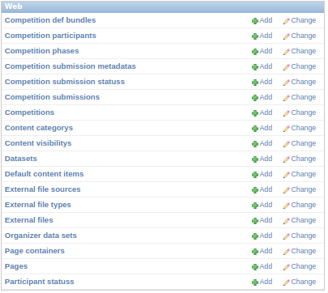
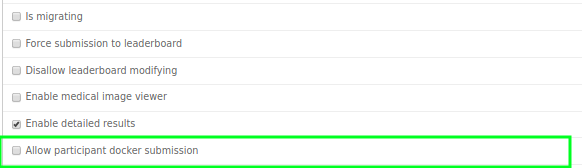
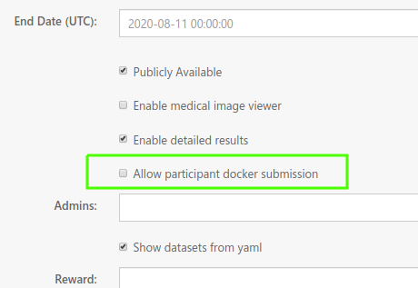
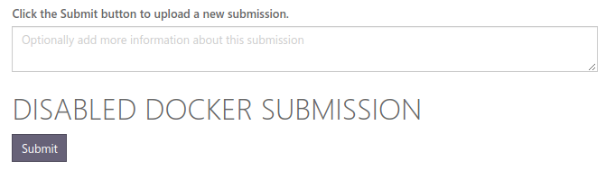
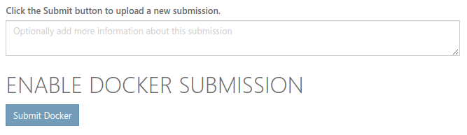
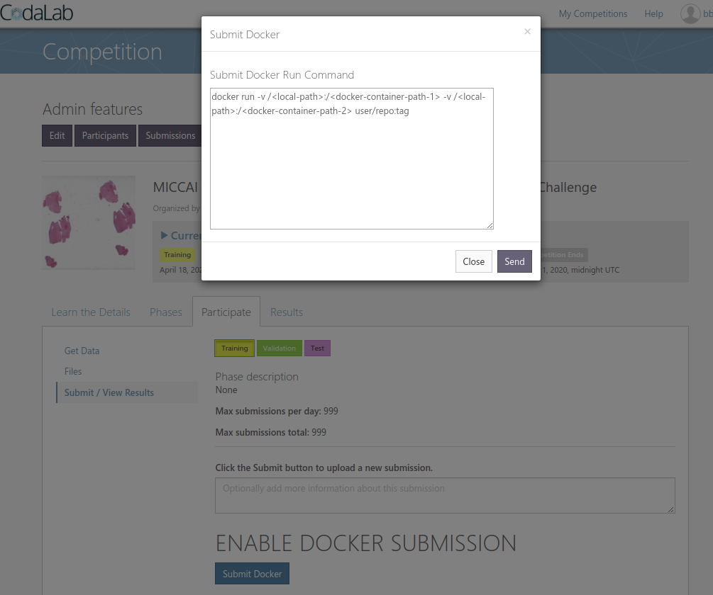

Docker Submission
This is a documentation for adding docker submissions to the open source project CodaLab.
Introduction
Codalab comes with essentially 2 types of submissions from participants:
- Results Submission: Participants submit the "results" of their algorithms.
- Code Submission: Participants submit actual code to be executed by the challenge organizer. The code can be executed directly as an executable ($ python sample.py...) or participants can define classes that the organizer calls themselves (hence the participants do not have to read the input data themselves).
We will be adding a third option where participants can submit a docker image with their code and libraries baked in.
Step 1: Install Codalab
First we need a running instance installed. Setup the challenge to accept a results submission, as we will tweak this process to evaluate the output of a docker container.
Step 2: Add Database Option for Docker Submission
Add New Column in Competition Table
Find file /codalab/apps/web/models.py. Approximately on line 233 is the Competition model definition. It has definitions for the columns of this table. It looks like this:
class Competition(ChaHubSaveMixin, models.Model):
...
Add enable_docker_submission as a BooleanField:
Add this line:
enable_docker_submission = models.BooleanField(default=False, verbose_name="Allow participant docker submission")
It doesn't matter what order the columns are in, so if you are familiar with setting up models in Django or Flask projects, just add a column that we can reference later.
Migrate Database So We Can See Our Changes
Codalab as of this writing (5/1/2020) is deployed with an orchestration of docker containers. One of these is the database (postgres).
Using docker ps we can see our images:
bbearce@MedICI-CodaLab-Master:~/src$ docker ps
CONTAINER ID IMAGE COMMAND CREATED STATUS PORTS NAMES
b8196a2e9fc5 nginx "bash -x /app/docker…" 4 months ago Up 2 months 0.0.0.0:80->80/tcp, 0.0.0.0:443->443/tcp nginx
528d2dc976a1 codalab-competitions_django "bash /app/docker/ru…" 4 months ago Up 2 months 0.0.0.0:8000->8000/tcp django
c56dcc7fb3e2 codalab-competitions_worker_site "sh /app/docker/run_…" 4 months ago Up 2 months worker_site
23996bbcfbd0 codalab/competitions-v1-compute-worker:1.1.7 "/bin/sh -c 'celery …" 4 months ago Up 2 months worker_compute
3f5a1df0f9ae codalab-competitions_flower "/usr/bin/dumb-init …" 4 months ago Up 2 months 0.0.0.0:5555->5555/tcp flower
b93b3f7e0a3b codalab-competitions_rabbit "docker-entrypoint.s…" 4 months ago Up 2 months 4369/tcp, 5671/tcp, 0.0.0.0:5672->5672/tcp, 15671/tcp, 25672/tcp, 0.0.0.0:15672->15672/tcp rabbit
5e3492959db1 postgres:9.6.3 "docker-entrypoint.s…" 4 months ago Up 2 months 5432/tcp postgres
We need use manage.py from the django container to migrate the database. This will talk to the postgres container for us. Codalab has notes for how to do this so we will follow their lead:
Note, in the link from codalab they have a placeholder for
APPNAME. Substitutewebin for this.
root@django:/app/codalab# ./manage schemamigration web --auto
./manage: line 3: ./config/generated/startup_env.sh: No such file or directory
./manage: line 4: ../venv/bin/activate: No such file or directory
/usr/local/lib/python2.7/site-packages/django_extensions/db/fields/__init__.py:425: DeprecationWarning: Django 1.8 features a native UUIDField, this UUIDField will be removed after Django 1.7 becomes unsupported.
warnings.warn("Django 1.8 features a native UUIDField, this UUIDField will be removed after Django 1.7 becomes unsupported.", DeprecationWarning)
+ Added field enable_docker_submission on web.Competition
Created 0085_auto__add_field_competition_enable_docker_submission.py. You can now apply this migration with: ./manage.py migrate web
Once you have that migrate the database.
./manage migrate
This will apply the migration and look for all changes to all tables. Looking in the results we can see our migration in action:
~
~
Running migrations for web:
- Migrating forwards to 0085_auto__add_field_competition_enable_docker_submission.
> web:0085_auto__add_field_competition_enable_docker_submission
~
~
Now let's verify our change. First create a database superuser:
docker exec -it django python manage.py createsuperuser
This will prompt you to create a superuser:
bbearce@miccai2019:~/src/codalab-competitions/codalab$ docker exec -it django python manage.py createsuperuser
/usr/local/lib/python2.7/site-packages/django_extensions/db/fields/__init__.py:425: DeprecationWarning: Django 1.8 features a native UUIDField, this UUIDField will be removed after Django 1.7 becomes unsupported.
warnings.warn("Django 1.8 features a native UUIDField, this UUIDField will be removed after Django 1.7 becomes unsupported.", DeprecationWarning)
Username: admin
Email address: bbearce@mgh.harvard.edu
Password:
Password (again):
Superuser created successfully.
Now proceed to http://<your domain>.com/admin and log in with the credentials you made. Find the "Web" app section and click "Competitions".

Next scroll till you see "Allow participant docker submission" or whatever you put as your new column.

Add Our new Option to the CompetitionForm Class
Django or CodaLab uses apps.web.forms.CompetitionForm to manage the edit competiton form.
class CompetitionForm(forms.ModelForm):
class Meta:
model = models.Competition
fields = (
'title',
'description',
'queue',
'disallow_leaderboard_modifying',
'force_submission_to_leaderboard',
'image',
'end_date',
'published',
'enable_medical_image_viewer',
'enable_detailed_results',
# change start
'enable_docker_submission',
# change end
'admins',
...
This will allow us to see this option in the edit competition view:

This has the effect of allowing access to this option from multiple views so we can conditionally render a docker submission form or a regular result submission form.
Step 3: Add Conditional Rendering for Docker\Result Submission
Add UI Elements
Find template apps/web/templates/web/competitions/_submit_results_page.html. Roughly on line 70 there is a {% if USE_AWS %} block and in the {% else %} block we can add our code.
Replace the inside of the else block with this code:
{% if phase.competition.enable_docker_submission %}
<h1>DOCKER SUBMISSION ENABLED </h1>
<!-- Submit Docker Button -->
<button id=submit-button type="button" data-toggle="modal" data-target="#submit-docker-dialog" class="btn btn-secondary">Submit Docker</button>
<!-- Submit Docker Button -->
{% else %}
<h1>DOCKER SUBMISSION DISABLED</h1>
<!-- original code from codalab -->
<button id="fileUploadButton"
class="button btn btn-primary {% if not phase.reference_data %}disabled{% endif %}"
{% if not phase.reference_data %}disabled="disabled"{% endif %}>
Submit
</button>
<!-- original code from codalab -->
{% endif %}
Our If Else block has the original code in the else.
At this point if you refresh the page and navigate to the "Participate" tab, you should see this.

Now if we go to "Edit" and look at the competition options, we see that if we check the box "Allow participant docker submission" we can see the text change on the "Participate" tab.

Next we need the "Submit Docker" button to do something. Let's add a modal that get's triggered when you click the button.
Add this code just before the line that has {% include "web/common/_submission_details_template.html" %} on line ~167:
<div class="modal fade" id="submit-docker-dialog">
<div class="modal-dialog">
<div class="modal-content">
<div class="modal-header">
<button type="button" class="close" data-dismiss="modal" aria-hidden="true">×</button>
<h4 class="modal-title">Submit Docker</h4>
</div>
<div class="modal-body">
<h4>Submit Docker Run Command</h4>
<textarea id="docker-run-command" type=text style="width: 500px; height: 250px;">docker run -v /<local-path>:/<docker-container-path-1> -v /<local-path>:/<docker-container-path-2> user/repo:tag</textarea>
</div>
<div class="modal-footer">
<button type="button" class="btn btn-default" data-dismiss="modal">Close</button>
<button id="submit-docker" class="btn btn-primary">Send</button>
</div>
</div>
</div>
</div>
You should see this when you click the "Submit Docker" button:

Now let's tie the "Send" button from the modal to some javascript so we can call the backend to process this for us. At the bottom of the same file we've been working in, add this code and create the file apps/web/static/js/submit_docker.js:
<!-- Docker Submission Front End -->
<script type="text/javascript" src="{{STATIC_URL}}js/submit_docker.js"></script>
<!-- Docker Submission Front End -->
In submit_docker.js add this:
$('#submit-docker').click(function(){
//copy from codalab/apps/web/static/js/Competition.js file
$('#details').html('Creating new submission...');
var competitionId = $("#competitionId").val()
var description = $('#submission_description_textarea').val() || '';
var method_name = $('#submission_method_name').val() || '';
var method_description = $('#submission_method_description').val() || '';
var project_url = $('#submission_project_url').val() || '';
var publication_url = $('#submission_publication_url').val() || '';
var bibtex = $('#submission_bibtex').val() || '';
var team_name = $('#submission_team_name').val() || '';
var organization_or_affiliation = $('#submission_organization_or_affiliation').val() || '';
var phase_id = $('#submission_phase_id').val();
// capture docker run command
var docker_run_cmd = $('#docker-run-command').val();
console.log(docker_run_cmd);
// capture docker run command
$('#submission_description_textarea').val('');
// console.log('/api/competition/' + competitionId + '/submission?description=' + encodeURIComponent(description) +
// '&method_name=' + encodeURIComponent(method_name) +
// '&method_description=' + encodeURIComponent(method_description) +
// '&project_url=' + encodeURIComponent(project_url) +
// '&publication_url=' + encodeURIComponent(publication_url) +
// '&bibtex=' + encodeURIComponent(bibtex) +
// '&team_name=' + encodeURIComponent(team_name) +
// '&organization_or_affiliation=' + encodeURIComponent(organization_or_affiliation) +
// '&phase_id=' + encodeURIComponent(phase_id)+
// '&docker-run-command='+ encodeURIComponent(docker_run_cmd)
// )
$.ajax({
url: '/api/competition/' + competitionId + '/submission?description=' + encodeURIComponent(description) +
'&method_name=' + encodeURIComponent(method_name) +
'&method_description=' + encodeURIComponent(method_description) +
'&project_url=' + encodeURIComponent(project_url) +
'&publication_url=' + encodeURIComponent(publication_url) +
'&bibtex=' + encodeURIComponent(bibtex) +
'&team_name=' + encodeURIComponent(team_name) +
'&organization_or_affiliation=' + encodeURIComponent(organization_or_affiliation) +
'&phase_id=' + encodeURIComponent(phase_id)+
'&docker-run-command='+ encodeURIComponent(docker_run_cmd),
type: 'post',
cache: false,
async: false,
data: {
'id': 'trackingid',
'name': '',
'type': '',
'size': ''
}
}).done(function(response) {
$('#details').html('');
$('#user_results tr.noData').remove();
$('#user_results').append(Competition.displayNewSubmission(response,
description,
method_name,
method_description,
project_url,
publication_url,
bibtex,
team_name,
organization_or_affiliation));
$('#user_results #' + response.id + ' .glyphicon-plus').on('click', function() { Competition.showOrHideSubmissionDetails(this) });
//$('#fileUploadButton').removeClass('disabled');
//$('#fileUploadButton').text("Submit Results...");
$('#user_results #' + response.id + ' .glyphicon-plus').click();
location.reload(true);
}).fail(function(jqXHR) {
var msg = 'An unexpected error occurred.';
if (jqXHR.status == 403) {
msg = jqXHR.responseJSON.detail;
}
$('#details').html(msg);
//$('#fileUploadButton').text("Submit Results...");
$('#fileUploadButton').removeClass('disabled');
});
$('#submit-docker-dialog').modal('toggle');
});
From looking at the ajax call you can see we are hitting the route for an api that ultimately triggers a POST request in view "CompetitionSubmissionViewSet" under the api app. The part we need to edit is the post_save() method.
Step 4: Edit Site-Worker Code
Replace the post_save() with this:
def post_save(self, obj, created):
# Original Code
#if created:
# evaluate_submission.apply_async((obj.pk, obj.phase.is_scoring_only))
if escape(self.request.QUERY_PARAMS.get('docker-run-command')) == 'None':
# submit_docker_command = None
submit_docker_command = "this is not a docker submission"
else:
submit_docker_command = escape(self.request.QUERY_PARAMS.get('docker-run-command', "")).replace('<','<').replace('>','>')
## - pass extra info to submission
if created:
evaluate_submission.apply_async((obj.pk,
obj.phase.is_scoring_only,
submit_docker_command))
## - pass extra info to submission
At the bottom of post_save() is evaluate_submission. That is from apps/web/tasks.py. We are passing the submit_docker_command to evaluate submission. Change evaluate_submission to accept the submit_docker_command. Also edit it to pass the command to task_func()
Add submit_docker_command to these two sections:
def evaluate_submission(submission_id, is_scoring_only, submit_docker_command):
and:
task_func(submission, job_id, submit_docker_command)
task_func is actually a user defined variable for score, a function in the same file above evaluate_submission. Add submit_docker_command to the input of score.
def score(submission, job_id, submit_docker_command):
Towards the bottom of score, _prepare_compute_worker_run needs submit_docker_command. Pass it in, and subsequently add it to it's function definition at towards the top of the page:
_prepare_compute_worker_run(job_id, submission, submit_docker_command, is_prediction=False)
and
def _prepare_compute_worker_run(job_id, submission, submit_docker_command, is_prediction):
Inside this function you will find a data variable we need to add the docker command to:
data = {
"id": job_id,
"task_type": "run",
"task_args": {
"submission_id": submission.pk,
"docker_image": docker_image,
"ingestion_program_docker_image": docker_image,
"bundle_url": _make_url_sassy(bundle_url),
"stdout_url": _make_url_sassy(stdout, permission='w'),
"stderr_url": _make_url_sassy(stderr, permission='w'),
"output_url": _make_url_sassy(output, permission='w'),
"ingestion_program_output_url": _make_url_sassy(submission.ingestion_program_stdout_file.name, permission='w'),
"ingestion_program_stderr_url": _make_url_sassy(submission.ingestion_program_stderr_file.name, permission='w'),
"detailed_results_url": _make_url_sassy(submission.detailed_results_file.name, permission='w'),
"private_output_url": _make_url_sassy(submission.private_output_file.name, permission='w'),
"secret": submission.secret,
"execution_time_limit": submission.phase.execution_time_limit,
"predict": is_prediction,
'submit_docker_command':submit_docker_command, ## - Added submit_docker_command here
}
At this point the code hands off the data to the Compute-Worker with compute_worker_run(data, soft_time_limit=time_limit, priority=2).
Step 5: The Compute-Worker
We need to enter the compute-worker docker container and edit "worker.py". On the machine where the compute-worker is running execute:
$ docker exec -it codalab/competitions-v1-compute-worker:latest
...or use the compute image that you need.
Once inside you should be able to see "worker.py". Open it. Find function run(task_id, task_args). This is where we will add our code on approx line 500.
Add this:
if task_args['submit_docker_command'] != 'this is not a docker submission':
print('@CUSTOM DOCKER START@')
participant_docker_cmd = task_args['submit_docker_command'].format(input_dir+"/res")
logger.info("Invoking program %s", participant_docker_cmd)
participant_docker_process = Popen(participant_docker_cmd.split(" "))
participant_docker_process.wait() # This halts other actions till this run isfinished.
print('@CUSTOM DOCKER END@')
This is the important line:
participant_docker_cmd = task_args['submit_docker_command'].format(input_dir+"/res")
This line substitutes the results directory into a mount placeholder so that the container can put the results from the run into it. Then the compute-worker can consume the results.
Update (7/17/2020):
Docker Image Submission only and resulting handling:
participant_docker_submission_cmd = [
'docker',
'run',
# Ask all participants to add this user
'-u',
'participant',
# Cut internet
'--net',
'none',
# Remove it after run
'--rm',
# Add support for GPUs and nvidia
'--gpus',
'all',
# Give it a name associated to task_id
'--name={}'.format("participant_docker_submission_taskid_"+str(task_id)),
# Try the new timeout feature
'--stop-timeout={}'.format(execution_time_limit),
# Don't allow subprocesses to raise privileges
'--security-opt=no-new-privileges',
# Set the right volume
'-v', '{0}:/mnt/in:ro'.format('/home/bbearce/Documents/docker_submissions/directory_of_files'), # :ro for read-only file system
'-v', '{0}:/mnt/out'.format(input_dir+"/res"),
# Set aside 512m memory for the host
#'--memory', '{}MB'.format(available_memory_mib - 512),
# Don't buffer python output, so we don't lose any
#'-e', 'PYTHONUNBUFFERED=1',
# Set current working directory
#'-w', run_dir,
# Note that hidden data dir is excluded here!
# Set the right image
task_args['submit_docker_command'],
]
if task_args['submit_docker_command'] != 'this is not a docker submission':
print('@CUSTOM DOCKER START@')
logger.info("Invoking participant docker submission: %s", participant_docker_submission_cmd)
participant_docker_process = Popen(participant_docker_submission_cmd)
participant_docker_process.wait() # This halts other actions till this run isfinished.
print('@CUSTOM DOCKER END@')
Below I will discuss some of the important options...
Note, we need to mount two folders (datain:/mnt/in, dataout:/mnt/out). We don't need to change anything about datain because we can use
:roto make it read-only inside the docker container like so /mnt/in:ro. This keeps users from tampering with input data. dataout needs to be owned by user "participant". We do this like so...
$ chown participant:participant <path to>/dataout
and make it writable as well:
$ chmod 0777 <path to>/dataout
If participant is the user that will be using these mounts then we need the container to run as participant. Notice we run the docker with -u participant, but how do we get that user in the docker ahead of time.
In the Dockerfile for a submission add this to the top:
ARG USER=participant
ARG UID=1000
ARG GID=1000
# default password for user
ARG PW=participant
# Option1: Using unencrypted password/ specifying password
RUN useradd -m ${USER} --uid=${UID} && echo "${USER}:${PW}" | \
chpasswd
This should add user participant with password participant.
Finally we need to make sure the container has no internet. We add flag --net none to cut internet to the docker rendering it unable to transfer data.
Lastly if this is an nvidia compute worker codalab/competitions-v1-nvidia-worker:latest then we have a few extra things ot take care of. On lines 274-275 there are two variables that don't exist being referenced.
max_execution_time_limit = task_args['max_execution_time_limit']
previous_execution_time = task_args['previous_execution_time']
to
#max_execution_time_limit = task_args['max_execution_time_limit'] # -BB-
#previous_execution_time = task_args['previous_execution_time'] # -BB-
and at the bottom of the file (~ line 700):
signal.alarm(int(math.fabs(math.ceil(max_execution_time_limit - time_difference - previous_execution_time)))) # Total Execution
to
#signal.alarm(int(math.fabs(math.ceil(max_execution_time_limit - time_difference - previous_execution_time)))) # Total Execution -BB-